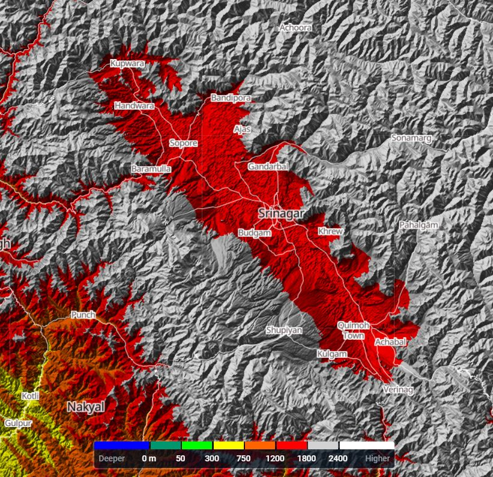
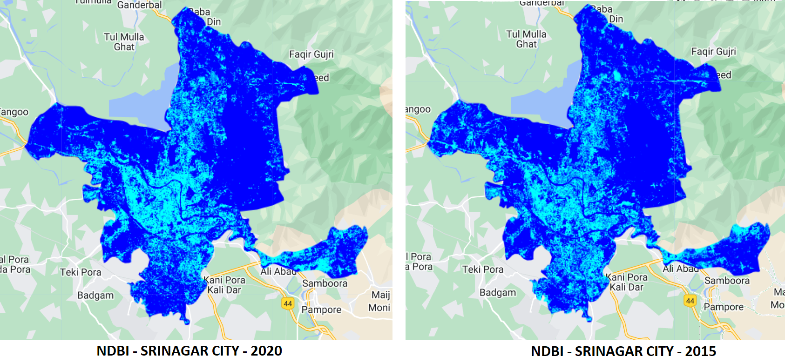
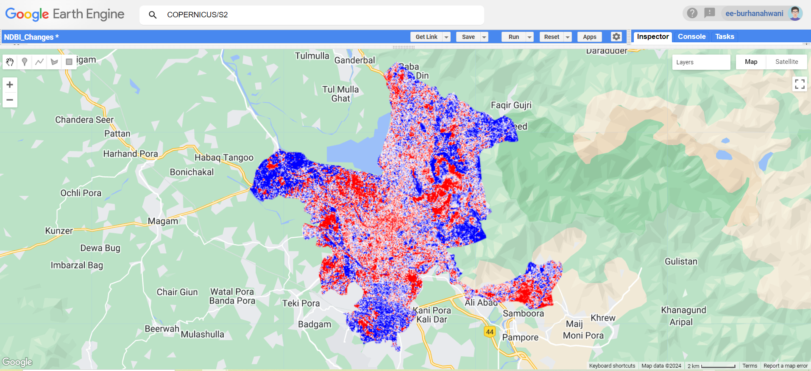

4 Week 4 - Policy

4.1 Summary
4.1.1 Introduction
For this week’s challenge, I choose the city where I grew up in viz. Srinagar. Srinagar is the capital of Jammu and Kashmir, a state in northern India. Srinagar’s predicted population in 2024 is roughly 1.7 million (according to UN World Urbanization Prospects). It’s also worth noting that the Srinagar Metropolitan Region accounts for more than 75% of the urban population, indicating highly unbalanced urbanisation or macrocephaly.
Before we go any further, let me provide a brief historical overview of the city. Srinagar’s name has been linked with some of its most known historical stories. The words “Sri” mean “Goddess of Wealth” and “nagar” imply “city”. As a result, the city is famously known as the “City of Wealth”.Today, Srinagar stands as one of the world’s most coveted tourist destinations, yet it has a history that has shaped it into what it is now. According to certain renowned historians, the famed Mauryan ruler King Ashoka established this city in 250 BC, which was then situated 5 kilometers from present-day Srinagar, as mentioned in Kalhan’s Rajatarangini.
4.1.2 History of Planning Policies ?
Throughout history, Srinagar has been on a journey of urban planning, dating back to before 1947. It began when Mr. W.G. Harris, a British Engineer, was enlisted by the State under Maharaja Gulab Singh’s rule after the devastating floods of 1902. His task was to devise a comprehensive flood management plan to ensure the sustainable development of the city. The first major planning initiative after Independence of India was the Srinagar Master Plan 1971-91. This plan spurred growth primarily towards the west and southwest, often encroaching upon low-lying areas, wetlands, and flood-prone zones near the Flood Spill Channel. However, the tumultuous period starting from 1989 resulted in a pause in planning efforts for about a decade. During this time, ineffective regulations by urban local bodies and authorities led to significant conversion of residential areas into commercial zones, further complicating the city’s development trajectory.
4.1.3 Master Plan Srinagar-2035
Recently devised Master Plan Srinagar-2035 was approved by the state government. The Master Plan-2035 is the third statutory planning exercise carried out for Srinagar city so far. However; the question remains as to how much has been achieved on ground vis-à-vis the master plan targets during the plan period of more than four decades. Certainly the progress is very dismal as evident on ground which is not surely not because of poor quality plans but due to absence of administrative zeal and lack of a strong political will. If we are to make our city economically more vibrant and environmentally sustainable, then there is no alternative to a sustained and long term planning vision as enshrined through master plans (Govt of J&K (2020))
The Master Plan-2035 proposes:
- Comprehensive land suitability analysis based on scientific parameters.
- Comprehensive identification and mapping of heritage buildings/precincts for revitalization and social inclusion of core city Srinagar.
- Policies for promotion of local craft and tourism on sustainable norms.
- Focus on policies connecting rural economy with urban economy.
- Restructuring of Srinagar city for its sustenance and improving index of urban living.
- Use of GIS technology for accuracy and data base creation.
- A unique Development Code based on individual zone system as per development intensity and natural setting aiming at promoting the development rather than constricting it.
- TDRs and Green FAR for heritage conservation and land value capturing or monetization of land.
4.1.4 Analyzing Srinagar Master Plan Through the Lens of NUA and Sendai Framework
The Srinagar Master Plan 2035 is closely aligned with the New Urban Agenda (NUA) and the Sendai Framework for Disaster Risk Reduction at least in words, advocating for resilient and sustainable urban growth. It integrates strategic land use planning with a strong emphasis on preserving cultural and natural assets, mirroring the NUA’s vision for inclusive and sustainable urban environments. The plan’s focus on mitigating disaster risks also corresponds with the Sendai Framework’s objectives, seeking to fortify Srinagar against the adverse effects of climate change and natural disasters.
Key aspects of the plan, including community development, housing, and urban design, aim to enhance the living standards in Srinagar, echoing the NUA’s pursuit of improved life quality and aligning with the Sendai Framework’s call for readiness and resilience.
However, despite its alignment with these global frameworks, the plan’s effectiveness may be hindered by a lack of concrete implementation strategies and a path forward. The absence of a detailed operational framework, clear procedures, and mechanisms for action could potentially limit its impact, raising concerns that it might follow the fate of previous master plans without any tangible outcomes.
Srinagar comes under Seismic Zone-5 and is Flood Prone and has suffered many floods with recent being the 2014 flood. So, a concrete urban master plan is required for this city surrounded by the Himalayas and the Pir Panjal mountain ranges.
4.2 Applications
To address the gaps in the Srinagar Master Plan 2035, particularly in comparison to the New Urban Agenda (NUA) and the Sendai Framework, leveraging remote sensing and Google Earth Engine (GEE) offers innovative and powerful approaches. These technologies can enhance urban planning and disaster risk reduction efforts through detailed and up-to-date geographic information. Here’s how they can be applied to address the identified lacunas:
Urban Expansion and Land Use Planning: We can apply GEE’s satellite imagery database to monitor urban sprawl and land use changes over time, integrating this data with urban planning tools to guide sustainable development.Apart from that the interactive panel structure of GEE makes it easy to show the policy makers its application. A similar approach was used by Patel et al. (2015) for the automated extraction of urban areas from Landsat imagery using GEE. I also, used GEE for obtaining the Urban Expansion in my home town of Srinagar.
Disaster Risk Reduction and Management We can use remote sensing and GEE for modeling flood scenarios and mapping hazard-prone areas to inform infrastructure resilience strategies.A similar approach was proposed for Bangladesh by Franci, Mandanici, and Bitelli (2015). We could leverage the remote sensing to identify the area which are getting most affected.And, implement polices like no residential construction in these regions,increase the land tax in these neighbourhoods for preventing people from buying land there so thus decrease the construction activities, and thus indirectly less disaster response required in the eventuality of a disaster.

Likewise, following the identification of heritage sites/buildings, establishing a buffer zone can serve as a measure to halt encroachment and impose stricter building regulations within this zone, thereby safeguarding the integrity of Kashmir’s age-old heritage. When contemplating heritage preservation, London’s blue plaques come to my mind as a notable example (“Blue Plaques | London City Hall” (n.d.)). It is my hope that Kashmir can introduce its own version of blue plaques, offering a window into its profound history and becoming a symbol of pride and achievement.
During my exploaration of Remote Sensing, I came to know about the Normalized Difference Built-up Index (NDBI). So, the efficient Planning of the City requires to check how the city is evolving throughout years and what policy makers can do to either stop or promote the areas being developed. for this exercise, I calcualted the NDBI for the 2015 and then for the year 2020. And, I was able to identify the aread which have gone a rapid urbanization in these 5 year time period.

Then, in order to get a proper comparison, I obtained the change in the 5 years period by subtracting the two layers and getting a difference map, which shows the areas which have increased NDBI Values in “red” and the areas which have had similar or no improvement as “blue” while those having moderate NDBI Change are in “white”.

4.3 Reflections
Upon reflecting on the policy-making process, I’ve come to believe that possessing a strong communication style is crucial, potentially even more so than having technical expertise. My experience as a public servant in India, where I’ve been directly involved in implementing policies, has taught me the significant challenge of bringing together various stakeholders to find common ground. It demands considerable courage and diplomacy. So, for best outcome of a policy, it should be supported by a good technical and scientific approach, & then the face of the policy should be a great saleman who can sell your vision. With the onset on Google Earth Engine, the possibilities are endless and just like I was able to obtain the Urban Expansion of the city from 2015 to 2020, we are able to answer many questions pertaining to the cities - be it the question of informal settlements or change detection or flood zoning, or disaster preparedness; all can be answered by using remote sensing.
So, to conclude, the Masterplan of Srinagar 2035 his lacking both the vision and the implementation; and if in future I become a part of the policy making team, which I am sure I might; I will keep all this in mind.